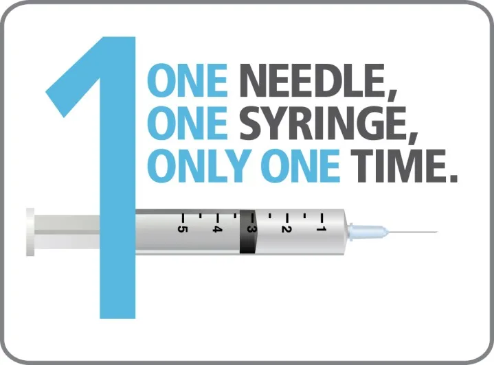
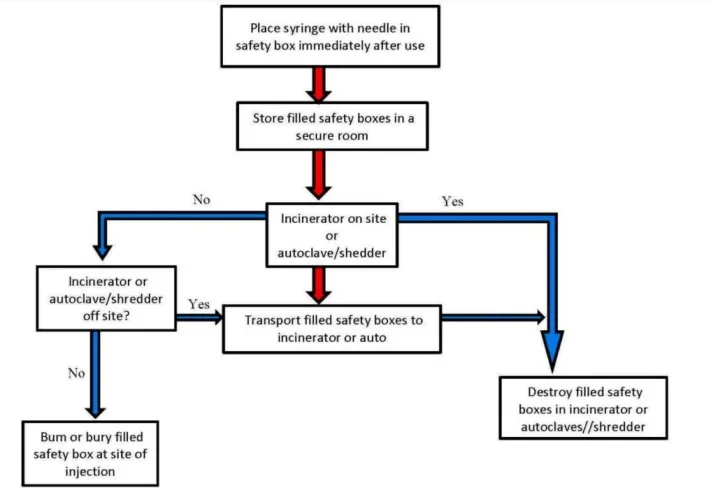

Expanded Nursing Uganda Explanation
Injection safety methods should be reviewed through safe maternal and newborn assessment, early recognition of danger signs, respectful communication and timely referral. Connect the definition to vital signs, bleeding, fetal or newborn wellbeing, patient education and local protocol requirements.
Contents — 16 sections (tap to expand)
01 INJECTION SAFETY AND MANAGEMENT
INJECTION SAFETY AND MANAGEMENT INTRODUCTION
Injection, or Getting an injection is a very common medical procedure. Most injections, about 95%, are given to treat illnesses. Immunizations make up about 3% of all injections, and the rest are used for different reasons, like giving blood or contraceptives.
A Problem to Solve : In many countries that are still developing or going through changes, a lot of injections are given when they’re not really needed. Sometimes, as many as 9 out of 10 people who go to see a primary health care provider get an injection. But more than 70% of these injections aren’t necessary. They could be given as medicine you swallow instead.
What’s Important: After an injection, it’s really important to safely collect and get rid of the used needles and syringes. This is a big part of how injections are taken care of from start to finish.
Three Big Concerns: When we think about whether injections are safe, there are three important things to consider:
- The person getting the injection should be safe.
- The health worker giving the injection should be safe.
- The community where the injections are happening should be safe.
So, making sure injections are done safely is really important for everyone’s well-being.
02 Injection Safety Guidelines
According to the World Health Organization (WHO, 2005), a safe injection is one that doesn’t harm the person receiving it, doesn’t put the person giving the injection at unnecessary risk, and doesn’t create dangerous waste for the community.
03 Principles to Follow for Safe Injections:
- Always use a new syringe and needle for each vaccine.
- Keep injection equipment and vaccine clean to avoid contamination.
- Prepare injections in a clean area where there’s little chance of contamination from blood or body fluids.
- Use a clean, sterile needle to puncture the top of multi-dose vials.
- Don’t leave the needle in the stopper of the vial.
- Protect your fingers with a small gauze pad when opening ampoules.
- Throw away a needle that touches anything not sterile, like your hands or surfaces.
- Be ready for any sudden movements from the patient during and after the injection.
- To avoid getting hurt, don’t put the cap back on a used needle; put it straight into a safety box.
- Put used syringes and needles into a safety box right where you used them, and seal the box when it’s full. Don’t move the contents or overfill the boxes.
- Close and seal the safety boxes before taking them to a safe place. Don’t open, empty, or reuse them.
- Handle and dispose of injection waste in a way that’s safe for the environment.
- Prevent accidents for the people in charge of throwing away the waste.
- Don’t put empty vials in the safety box; they might burst when burned.
- Only put potentially contaminated injection equipment in the safety boxes. Don’t put empty vials, cotton pads, or other things in them.
04 Guidelines for Safe Injections:
- Follow the right infection control practices and keep everything clean when preparing and giving injections.
- Don’t use the same syringe for different patients, even if you change the needle or inject through a tube.
- Never put a used needle or syringe into a vial.
- Don’t use medications meant for one use on more than one patient.
- Don’t use a bag of IV solution for more than one patient.
- Use multi-dose vials for one patient if possible.
- Don’t keep multi-dose vials near where you treat patients. Prepare medications in a clean area away from any contamination, and not where you handle used syringes.
- Wear a facemask when injecting material or placing a catheter into the epidural or subdural space.
05 Ways to Prevent Unsafe Injections:
- Teach health care workers about injection safety.
- Supervise health workers when they give medicines.
- Set up rules and regulations to make sure injections are safe.
- Hire qualified health workers.
- Supervise intern nurses when they give medicines.
06 Prevent Needle Pricks
- Use Safety Needles: Choose needles with safety features like retractable or shielded needles. These devices automatically cover the needle after use, reducing the risk of accidental pricks.
- Follow Proper Handling: Handle needles with care and avoid recapping after use. Dispose of them immediately in designated sharps containers.
- Wear Personal Protective Equipment (PPE): Always wear gloves when handling needles or coming into contact with blood or body fluids. Use other appropriate PPE as needed.
- Safe Disposal: Properly dispose of used needles and sharps in puncture-resistant containers. Ensure containers are close to where procedures are performed.
- Use Needleless Systems: Employ needleless systems whenever possible for medication preparation and administration, reducing the need for needles.
- Adopt Engineering Controls: Install safety-engineered devices and equipment that minimize the risk of needle pricks during procedures.
- Education and Training: Provide thorough training on proper needle handling, disposal, and safety protocols to all healthcare workers.
- Sharps Injury Prevention Program: Establish a program that identifies risks, offers guidance, and encourages reporting of any needle prick incidents.
- Safe Practices for Disposal: Train staff to properly close and seal sharps containers when they’re full. Arrange for regular disposal and replacement of containers.
- Sharps Containers Accessibility: Place sharps containers at convenient locations throughout the facility to encourage proper disposal.
- Post-Procedure Safety: After using needles, avoid hurriedly disposing of equipment. Take time to ensure proper disposal and safety measures.
- Communication and Collaboration: Encourage open communication among healthcare team members about needle safety and potential risks.
- Needleless Catheters: Use needleless catheter systems for intravenous access to minimize needle use and related risks.
- Safety Syringes: Implement safety syringes with features that reduce the risk of needle pricks during injection or withdrawal.
- Regular Review and Updates: Continuously assess and update needle safety protocols based on new technologies and best practices.
07 Managing an Accidental Needle Prick.
Accidental needle pricks can happen, but knowing how to handle them properly is crucial. Here are the steps to manage an accidental needle prick:
- Stay Calm: Take a deep breath and try to stay calm. Accidents can happen, but you can take steps to minimize any potential harm.
- Allow Bleeding: If the needlestick causes a small cut or puncture, gently squeeze the area to encourage bleeding. This can help flush out any potential germs.
- Wash the Area: Clean the affected area with soap and running water. Thoroughly wash the wound for at least 20 seconds.
- Inform Your Supervisor: Let your immediate supervisor or instructor know about the incident as soon as possible. They can guide you through the proper procedures and documentation.
- Report to Occupational Health: Visit your institution’s occupational health department or designated medical personnel. They will assess the risk and guide you on any necessary actions.
- Identify the Source: If possible, identify the source patient (the person whose blood you were exposed to). This is important for assessing potential infections and taking appropriate measures.
- Collect Information: Note down important details, such as the type of exposure, the circumstances, and any information about the source patient.
- Testing and Treatment: Depending on the situation, you may need to undergo blood tests to check for infections like HIV, hepatitis B, and hepatitis C. Your healthcare provider will determine if post-exposure prophylaxis (PEP) is necessary.
- Follow Medical Recommendations: If PEP or any other treatment is prescribed, make sure to follow the instructions carefully. PEP is most effective when started as soon as possible after exposure.
- Document the Incident: Keep a record of the incident, including dates, times, actions taken, and any medical treatments received. This documentation is important for your own records and any future follow-up.
08 Disposal criteria in mass immunization
- Methods Strengths Weaknesses
- Waste burial pit/cement encapsulation or other immobilizing agent (sand, plaster) ❒ Simple ❒ Inexpensive ❒ Low tech ❒ Prevents unsafe needle and syringe reuse ❒ Prevents sharp-related infections/injuries to waste handlers/scavengers ❒ Potential of being unburied (if pit is only soil-covered and waste not encapsulated) ❒ No volume reduction ❒ No disinfection of wastes ❒ Pit fills quickly during campaigns ❒ Not recommended for non-sharp infectious wastes ❒ Danger to the community if not properly buried ❒ Inappropriate in areas of heavy rain or if water table is near the surface
- Burning (<400°C) ❒ Relatively inexpensive ❒ Reduction in waste volume ❒ Reduction in infectious material ❒ Incomplete combustion ❒ May not completely sterilize ❒ Heavy smoke & potential fire hazard ❒ Requires fuel, dry waste to start burning ❒ Toxic air emissions (e.g., heavy metals, dioxins, furans, fly ash ) which may violate environmental or health regulations ❒ Production of hazardous ash containing leachable metals, dioxins, and furans ❒ Potential for needlestick injuries since needles are not destroyed
- Medium Temp Incineration (800°-1000°C) ❒ Less expensive than high-temperature incinerators ❒ Reduction in waste volume ❒ Reduction in infectious material ❒ Incomplete combustion ❒ Potential for heavy smoke ❒ Requires fuel and dry waste for start-up and maintenance of high temperatures ❒ Trained personnel needed to operate ❒ Potential emission of toxic air pollutants to a low level (e.g., heavy metals, dioxins, furans, fly ash ) which may violate environmental or health regulations ❒ Production of hazardous ash containing variable leachable metals, dioxins, and furans ❒ Potential for needle stick injuries since some needles may not be destroyed ❒ Needs constant attention during operation and regular maintenance throughout the year
- High Temp Incineration (>1000°C) ❒ Almost complete combustion and sterilization of used injection equipment ❒ Further reduces toxic emissions with pollution control devices ❒ Greatly reduces volume of immunization waste ❒ Expensive to build, operate, and maintain ❒ Requires electricity, fuel, and trained personnel to operate ❒ Toxic air emissions (e.g., metals, dioxins, furans, fly ash) may still be released without pollution control devices ❒ May produce hazardous ash containing variable leachable metals, dioxins, and furans
- Needle removal/needle destruction (Models range from simple manual and battery operated to more complex electrical units) ❒ Prevents needle reuse ❒ Reduces occupational risks to waste handlers and scavengers ❒ In some instances, plastic may be recycled after treatment ❒ Manual/battery-operated models available ❒ Fluid splashes may contaminate work area/operator ❒ Fluid splash back and needle manipulation may lead to disease transmission in some cases ❒ Used needles/syringes need further treatment for disposal in some cases ❒ Safety profile not established
- Melting syringes ❒ Greatly reduces volume of immunization waste ❒ Prevents reuse ❒ Safety profile not established ❒ Emission of potentially toxic gases ❒ Electricity required
- Steam sterilization (autoclaving or hydro claving), microwaving (with shredding) ❒ Successfully used for decades to treat sharps and non-immunization healthcare wastes ❒ Range of models and capacities available ❒ Sterilizes used injection equipment ❒ Less hazardous air emissions (no dioxins or heavy metals) ❒ Reduced waste volume when used with shredder ❒ Plastic may be recycled after separation ❒ High capital cost (but may be less than high-temperature incinerators with pollution control devices) ❒ Requires electricity and water ❒ High operational costs ❒ High maintenance ❒ May emit volatile organics in steam during depressurization and chamber opening ❒ Requires further treatment to avoid reuse (e.g., shredding) ❒ Resulting sterile waste still needs proper disposal
09 Injection misuse and overuse (Using Injections Safely and Responsibly )
Sometimes, injections are not used in the right way, and that can cause problems. Let’s understand why this happens and what can be done to prevent it.
10 **Why Injections are Misused and Overused:**
- People might think injections are stronger and faster, so they prefer them.
- Some believe that doctors think injections are the best treatment.
- Doctors might give more injections because they want to make patients happy.
- Also, doctors can charge more money for injections, so they might prescribe them even if they’re not needed.
- Talking openly with doctors and asking questions can help clear up these misunderstandings and stop too many injections from being given.
11 **Bad Effects of Misusing and Overusing Injections:**
- Using injections in the wrong way, especially for immunization, can lead to serious diseases like Hepatitis B, C, and HIV/AIDS.
- Vaccines given through injections can sometimes cause harmful side effects.
- Health providers who give injections could also get hurt.
- The environment, like soil, air, and water, can also be affected by unsafe injection practices.
- Using injections in the wrong way can make immunization programs not work well and affect how many people get protected from diseases.
12 **What to Do if You Get Hurt by a Needle:**
If you accidentally get hurt by a sharp needle:
- Let the wound bleed, but don’t suck or rub it.
- Wash the area well with soap and water.
- Cover the wound with a waterproof bandage.
- If you know the patient’s name, remember it.
- Report to occupational health unit.
- Let your boss know and write down what happened.
- If patient is thought to be HIV +, post-exposure prophylaxis (PEP) may be required. This should be given as soon as possible after injury.
NB : Staff should be familiar with local pep guidelines!
13 Nursing Uganda Clinical Lens
Use Injection safety methods as a practical nursing topic, not only a memorized definition. Study medicines through indication, safety checks, expected response, adverse effects and patient teaching.
- What to understand first: define injection safety methods, identify the normal or expected pattern, then explain what changes when the patient is unwell.
- Why it matters in care: the nurse must recognize risk early, explain findings clearly, document accurately and know when to escalate.
- How to revise it: connect each point to assessment, nursing diagnosis or care problem, intervention, rationale and evaluation.
14 Assessment Guide
- Diagnosis or reason for the medicine, allergies, pregnancy status and previous reactions.
- Current medicines, herbal products, renal or liver risk and baseline observations.
- Dose, route, timing, dilution, expiry date and documentation requirements.
15 Nursing Priorities, Rationales and Outcomes
- Apply the rights of medication administration and facility policy.
- Monitor therapeutic response and class-specific adverse effects.
- Educate the patient on purpose, timing, missed doses, warning symptoms and adherence.
The rationale for these priorities is patient safety: nursing actions should prevent deterioration, reduce discomfort, support recovery and create clear evidence for the next caregiver.
- Expected outcome: The medicine produces the intended effect without preventable harm, and administration is accurately documented.
16 Patient Teaching and Revision Check
- Explain injection safety methods in simple language the patient or caregiver can repeat back.
- Teach warning signs, medicine or follow-up instructions, hygiene or lifestyle points where relevant.
- For exams, prepare a short answer using: definition, causes or risk factors, signs, assessment, management, complications and prevention.
- For ward practice, document baseline findings, actions taken, patient response and the plan for review.
Illustrations and Diagrams (2)


Related Video Lectures
Watch nursing lecture videos on YouTube for this topic. Opens in a new tab.
Watch on YouTubeExternal link: YouTube may use its own cookies and terms. Nursing Uganda is not affiliated with YouTube.